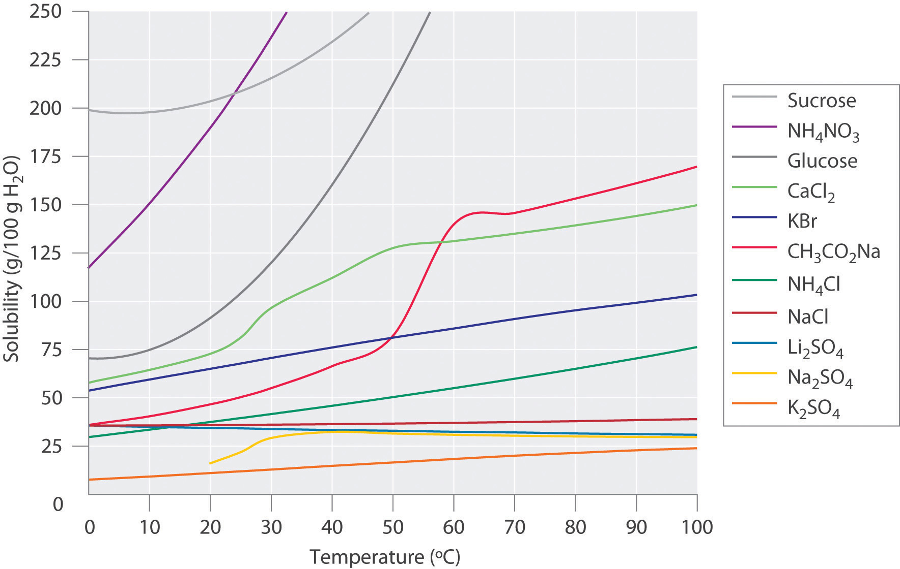
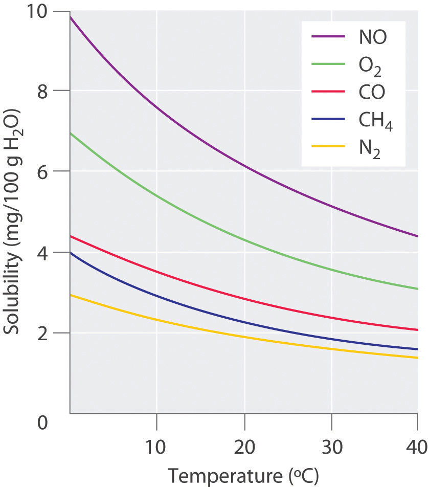
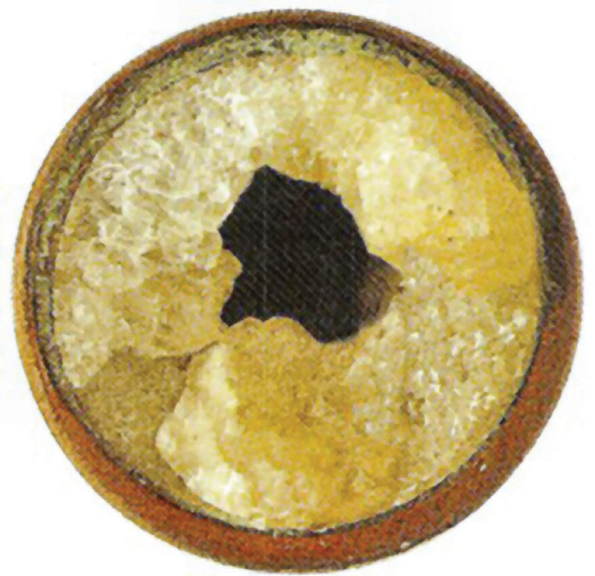
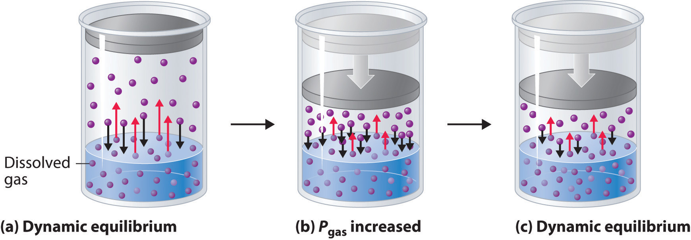

Experimentally it is found that the solubility of most compounds depends strongly on temperature and, if a gas, on pressure as well. As we shall see, the ability to manipulate the solubility by changing the temperature and pressure has several important consequences.
Figure 13.9 "Solubilities of Several Inorganic and Organic Solids in Water as a Function of Temperature" shows plots of the solubilities of several organic and inorganic compounds in water as a function of temperature. Although the solubility of a solid generally increases with increasing temperature, there is no simple relationship between the structure of a substance and the temperature dependence of its solubility. Many compounds (such as glucose and CH3CO2Na) exhibit a dramatic increase in solubility with increasing temperature. Others (such as NaCl and K2SO4) exhibit little variation, and still others (such as Li2SO4) become less soluble with increasing temperature.
Figure 13.9 Solubilities of Several Inorganic and Organic Solids in Water as a Function of Temperature
Solubility may increase or decrease with temperature; the magnitude of this temperature dependence varies widely among compounds.
Notice in particular the curves for NH4NO3 and CaCl2. The dissolution of ammonium nitrate in water is endothermic (ΔHsoln = +25.7 kJ/mol), whereas the dissolution of calcium chloride is exothermic (ΔHsoln = −68.2 kJ/mol), yet Figure 13.9 "Solubilities of Several Inorganic and Organic Solids in Water as a Function of Temperature" shows that the solubility of both compounds increases sharply with increasing temperature. In fact, the magnitudes of the changes in both enthalpy and entropy for dissolution are temperature dependent. Because the solubility of a compound is ultimately determined by relatively small differences between large numbers, there is generally no good way to predict how the solubility will vary with temperature.
The variation of solubility with temperature has been measured for a wide range of compounds, and the results are published in many standard reference books. Chemists are often able to use this information to separate the components of a mixture by fractional crystallizationThe separation of compounds based on their relative solubilities in a given solvent., the separation of compounds on the basis of their solubilities in a given solvent. For example, if we have a mixture of 150 g of sodium acetate (CH3CO2Na) and 50 g of KBr, we can separate the two compounds by dissolving the mixture in 100 g of water at 80°C and then cooling the solution slowly to 0°C. According to the temperature curves in Figure 13.9 "Solubilities of Several Inorganic and Organic Solids in Water as a Function of Temperature", both compounds dissolve in water at 80°C, and all 50 g of KBr remains in solution at 0°C. Only about 36 g of CH3CO2Na are soluble in 100 g of water at 0°C, however, so approximately 114 g (150 g − 36 g) of CH3CO2Na crystallizes out on cooling. The crystals can then be separated by filtration. Thus fractional crystallization allows us to recover about 75% of the original CH3CO2Na in essentially pure form in only one step.
Fractional crystallization is a common technique for purifying compounds as diverse as those shown in Figure 13.9 "Solubilities of Several Inorganic and Organic Solids in Water as a Function of Temperature" and from antibiotics to enzymes. For the technique to work properly, the compound of interest must be more soluble at high temperature than at low temperature, so that lowering the temperature causes it to crystallize out of solution. In addition, the impurities must be more soluble than the compound of interest (as was KBr in this example) and preferably present in relatively small amounts.
The solubility of gases in liquids decreases with increasing temperature, as shown in Figure 13.10 "Solubilities of Several Common Gases in Water as a Function of Temperature at Partial Pressure of 1 atm". Attractive intermolecular interactions in the gas phase are essentially zero for most substances. When a gas dissolves, it does so because its molecules interact with solvent molecules. Because heat is released when these new attractive interactions form, dissolving most gases in liquids is an exothermic process (ΔHsoln < 0). Conversely, adding heat to the solution provides thermal energy that overcomes the attractive forces between the gas and the solvent molecules, thereby decreasing the solubility of the gas.The phenomenon is similar to that involved in the increase in vapor pressure of a pure liquid with increasing temperature, as discussed in Chapter 11 "Liquids". In the case of vapor pressure, however, it is attractive forces between solvent molecules that are being overcome by the added thermal energy when the temperature is increased.
Figure 13.10 Solubilities of Several Common Gases in Water as a Function of Temperature at Partial Pressure of 1 atm
The solubilities of all gases decrease with increasing temperature.
The decrease in the solubilities of gases at higher temperatures has both practical and environmental implications. Anyone who routinely boils water in a teapot or electric kettle knows that a white or gray deposit builds up on the inside and must eventually be removed. The same phenomenon occurs on a much larger scale in the giant boilers used to supply hot water or steam for industrial applications, where it is called “boiler scale,” a deposit that can seriously decrease the capacity of hot water pipes (Figure 13.11 "Boiler Scale in a Water Pipe"). The problem is not a uniquely modern one: aqueducts that were built by the Romans 2000 years ago to carry cold water from alpine regions to warmer, drier regions in southern France were clogged by similar deposits. The chemistry behind the formation of these deposits is moderately complex and will be described in more detail in Chapter 17 "Solubility and Complexation Equilibriums", but the driving force is the loss of dissolved CO2 from solution. Hard water contains dissolved Ca2+ and HCO3− (bicarbonate) ions. Calcium bicarbonate [Ca(HCO3)2] is rather soluble in water, but calcium carbonate (CaCO3) is quite insoluble. A solution of bicarbonate ions can react to form carbon dioxide, carbonate ion, and water:
Equation 13.9
2HCO3−(aq) → CO22−(aq) + H2O(l) + CO2(aq)Heating the solution decreases the solubility of CO2, which escapes into the gas phase above the solution. In the presence of calcium ions, the carbonate ions precipitate as insoluble calcium carbonate, the major component of boiler scale.
Figure 13.11 Boiler Scale in a Water Pipe
Calcium carbonate (CaCO3) deposits in hot water pipes can significantly reduce pipe capacity. These deposits, called boiler scale, form when dissolved CO2 is driven into the gas phase at high temperatures.
In thermal pollution, lake or river water that is used to cool an industrial reactor or a power plant is returned to the environment at a higher temperature than normal. Because of the reduced solubility of O2 at higher temperatures (Figure 13.10 "Solubilities of Several Common Gases in Water as a Function of Temperature at Partial Pressure of 1 atm"), the warmer water contains less dissolved oxygen than the water did when it entered the plant. Fish and other aquatic organisms that need dissolved oxygen to live can literally suffocate if the oxygen concentration of their habitat is too low. Because the warm, oxygen-depleted water is less dense, it tends to float on top of the cooler, denser, more oxygen-rich water in the lake or river, forming a barrier that prevents atmospheric oxygen from dissolving. Eventually even deep lakes can be suffocated if the problem is not corrected. Additionally, most fish and other nonmammalian aquatic organisms are cold-blooded, which means that their body temperature is the same as the temperature of their environment. Temperatures substantially greater than the normal range can lead to severe stress or even death. Cooling systems for power plants and other facilities must be designed to minimize any adverse effects on the temperatures of surrounding bodies of water.
A similar effect is seen in the rising temperatures of bodies of water such as the Chesapeake Bay, the largest estuary in North America, where global warming has been implicated as the cause (For more information on global warming, see Chapter 5 "Energy Changes in Chemical Reactions", Section 5.5 "Energy Sources and the Environment".) For each 1.5°C that the bay’s water warms, the capacity of water to dissolve oxygen decreases by about 1.1%. Many marine species that are at the southern limit of their distributions have shifted their populations farther north. In 2005, the eelgrass, which forms an important nursery habitat for fish and shellfish, disappeared from much of the bay following record high water temperatures. Presumably, decreased oxygen levels decreased populations of clams and other filter feeders, which then decreased light transmission to allow the eelsgrass to grow. The complex relationships in ecosystems such as the Chesapeake Bay are especially sensitive to temperature fluctuations that cause a deterioration of habitat quality.
External pressure has very little effect on the solubility of liquids and solids. In contrast, the solubility of gases increases as the partial pressure of the gas above a solution increases. This point is illustrated in Figure 13.12 "A Model Depicting Why the Solubility of a Gas Increases as the Partial Pressure Increases at Constant Temperature", which shows the effect of increased pressure on the dynamic equilibrium that is established between the dissolved gas molecules in solution and the molecules in the gas phase above the solution. Because the concentration of molecules in the gas phase increases with increasing pressure, the concentration of dissolved gas molecules in the solution at equilibrium is also higher at higher pressures.
Figure 13.12 A Model Depicting Why the Solubility of a Gas Increases as the Partial Pressure Increases at Constant Temperature
(a) When a gas comes in contact with a pure liquid, some of the gas molecules (purple spheres) collide with the surface of the liquid and dissolve. When the concentration of dissolved gas molecules has increased so that the rate at which gas molecules escape into the gas phase is the same as the rate at which they dissolve, a dynamic equilibrium has been established, as depicted here. This equilibrium is entirely analogous to the one that maintains the vapor pressure of a liquid. (For more information on vapor pressure, see Chapter 11 "Liquids", Section 11.3 "Unique Properties of Liquids".) (b) Increasing the pressure of the gas increases the number of molecules of gas per unit volume, which increases the rate at which gas molecules collide with the surface of the liquid and dissolve. (c) As additional gas molecules dissolve at the higher pressure, the concentration of dissolved gas increases until a new dynamic equilibrium is established.
The relationship between pressure and the solubility of a gas is described quantitatively by Henry’s lawAn equation that quantifies the relationship between the pressure and the solubility of a gas: , which is named for its discoverer, the English physician and chemist, William Henry (1775–1836):
Equation 13.10
C = kPwhere C is the concentration of dissolved gas at equilibrium, P is the partial pressure of the gas, and k is the Henry’s law constant, which must be determined experimentally for each combination of gas, solvent, and temperature. Although the gas concentration may be expressed in any convenient units, we will use molarity exclusively. The units of the Henry’s law constant are therefore mol/(L·atm) = M/atm. Values of the Henry’s law constants for solutions of several gases in water at 20°C are listed in Table 13.6 "Henry’s Law Constants for Selected Gases in Water at 20°C".
As the data in Table 13.6 "Henry’s Law Constants for Selected Gases in Water at 20°C" demonstrate, the concentration of a dissolved gas in water at a given pressure depends strongly on its physical properties. For a series of related substances, London dispersion forces increase as molecular mass increases. Thus among the elements of group 18, the Henry’s law constants increase smoothly from He to Ne to Ar. The table also shows that O2 is almost twice as soluble as N2. Although London dispersion forces are too weak to explain such a large difference, O2 is paramagnetic and hence more polarizable than N2, which explains its high solubility.
Table 13.6 Henry’s Law Constants for Selected Gases in Water at 20°C
| Gas | Henry’s Law Constant [mol/(L·atm)] × 10−4 |
|---|---|
| He | 3.9 |
| Ne | 4.7 |
| Ar | 15 |
| H2 | 8.1 |
| N2 | 7.1 |
| O2 | 14 |
| CO2 | 392 |
Gases that react chemically with water, such as HCl and the other hydrogen halides, H2S, and NH3, do not obey Henry’s law; all of these gases are much more soluble than predicted by Henry’s law. For example, HCl reacts with water to give H+(aq) and Cl−(aq), not dissolved HCl molecules, and its dissociation into ions results in a much higher solubility than expected for a neutral molecule.
Gases that react with water do not obey Henry’s law.
Henry’s law has important applications. For example, bubbles of CO2 form as soon as a carbonated beverage is opened because the drink was bottled under CO2 at a pressure greater than 1 atm. When the bottle is opened, the pressure of CO2 above the solution drops rapidly, and some of the dissolved gas escapes from the solution as bubbles. Henry’s law also explains why scuba divers have to be careful to ascend to the surface slowly after a dive if they are breathing compressed air. At the higher pressures under water, more N2 from the air dissolves in the diver’s internal fluids. If the diver ascends too quickly, the rapid pressure change causes small bubbles of N2 to form throughout the body, a condition known as “the bends.” These bubbles can block the flow of blood through the small blood vessels, causing great pain and even proving fatal in some cases.
Due to the low Henry’s law constant for O2 in water, the levels of dissolved oxygen in water are too low to support the energy needs of multicellular organisms, including humans. To increase the O2 concentration in internal fluids, organisms synthesize highly soluble carrier molecules that bind O2 reversibly. For example, human red blood cells contain a protein called hemoglobin that specifically binds O2 and facilitates its transport from the lungs to the tissues, where it is used to oxidize food molecules to provide energy. The concentration of hemoglobin in normal blood is about 2.2 mM, and each hemoglobin molecule can bind four O2 molecules. Although the concentration of dissolved O2 in blood serum at 37°C (normal body temperature) is only 0.010 mM, the total dissolved O2 concentration is 8.8 mM, almost a thousand times greater than would be possible without hemoglobin. Synthetic oxygen carriers based on fluorinated alkanes have been developed for use as an emergency replacement for whole blood. Unlike donated blood, these “blood substitutes” do not require refrigeration and have a long shelf life. Their very high Henry’s law constants for O2 result in dissolved oxygen concentrations comparable to those in normal blood.
The Henry’s law constant for O2 in water at 25°C is 1.27 × 10−3 M/atm, and the mole fraction of O2 in the atmosphere is 0.21. Calculate the solubility of O2 in water at 25°C at an atmospheric pressure of 1.00 atm.
Given: Henry’s law constant, mole fraction of O2, and pressure
Asked for: solubility
Strategy:
A Use Dalton’s law of partial pressures to calculate the partial pressure of oxygen. (For more information about Dalton’s law of partial pressures, see Chapter 10 "Gases", Section 10.5 "Mixtures of Gases".)
B Use Henry’s law to calculate the solubility, expressed as the concentration of dissolved gas.
Solution:
A According to Dalton’s law, the partial pressure of O2 is proportional to the mole fraction of O2:
PA = XAPt = (0.21)(1.00 atm) = 0.21 atmB From Henry’s law, the concentration of dissolved oxygen under these conditions is
Exercise
To understand why soft drinks “fizz” and then go “flat” after being opened, calculate the concentration of dissolved CO2 in a soft drink
The Henry’s law constant for CO2 in water at 25°C is 3.4 × 10−2 M/atm.
Answer:
The solubility of most substances depends strongly on the temperature and, in the case of gases, on the pressure. The solubility of most solid or liquid solutes increases with increasing temperature. The components of a mixture can often be separated using fractional crystallization, which separates compounds according to their solubilities. The solubility of a gas decreases with increasing temperature. Henry’s law describes the relationship between the pressure and the solubility of a gas.
Use the kinetic molecular theory of gases discussed in Chapter 10 "Gases" to explain why the solubility of virtually all gases in liquids decreases with increasing temperature.
An industrial plant uses water from a nearby stream to cool its reactor and returns the water to the stream after use. Over a period of time, dead fish start to appear downstream from the plant, but there is no evidence for any leaks of potentially toxic chemicals into the stream. What other factor might be causing the fish to die?
One manufacturer’s instructions for setting up an aquarium specify that if boiled water is used, the water must be cooled to room temperature and allowed to stand overnight before fish are added. Why is it necessary for the water to stand?
Using a carbonated beverage as an example, discuss the effect of temperature on the “fizz.” How does the “foaminess” of a carbonated beverage differ between Los Angeles, California, and Denver, Colorado?
A common laboratory technique for degassing a solvent is to place it in a flask that is sealed to the atmosphere and then evacuate the flask to remove any gases above the liquid. Why is this procedure effective? Why does the temperature of the solvent usually decrease substantially during this process?
When water is boiled, all of the dissolved oxygen and nitrogen are removed. When the water is cooled to room temperature, it initially contains very little dissolved oxygen. Allowing the water to stand overnight allows oxygen in the air to dissolve, so that the fish will not suffocate.
Evacuating the flask to remove gases decreases the partial pressure of oxygen above the solution. According to Henry’s law, the solubility of any gas decreases as its partial pressure above the solution decreases. Consequently, dissolved oxygen escapes from solution into the gas phase, where it is removed by the vacuum pump. Filling the flask with nitrogen gas and repeating this process several times effectively removes almost all of the dissolved oxygen. The temperature of the solvent decreases because some solvent evaporates as well during this process. The heat that is required to evaporate some of the liquid is initially removed from the rest of the solvent, decreasing its temperature.
The solubility of CO2 in water at 0°C and 1 atm is 0.335 g/100 g of H2O. At 20°C and 1 atm, the solubility of CO2 in water is 0.169 g/100 g of H2O.
The solubility of O2 in 100 g of H2O at varying temperatures and a pressure of 1 atm is given in the following table:
| Solubility (g) | Temperature (°C) |
|---|---|
| 0.0069 | 0 |
| 0.0054 | 10 |
| 0.0043 | 20 |